仿真环境
You can choose language by
环境介绍
该项目的仿真环境基于开源仿真软件webots搭建，仿真环境的背景是模拟现实生活中在室外场景中的目标追踪问题。为此，设立了包括城市街道、市中心、湖边、乡村、沙漠、农田共六张地图，其中每张地图演化出白天、夜晚、雾天、雪天等，总共24个环境。为了方便模型训练从简单的环境开始，还设置了几张简单的环境地图可供使用。
该项目24个仿真环境示意图：

运行流程

demo模式
该模式在地图中生成一个跟踪器。可以通过键盘操作跟踪器在地图中飞行，浏览地图。同时该跟踪器默认跟踪其初始位置附近的一辆BmwX5车辆，并实时把reward参数输出在Console状态栏。可以用该对象测试内置reward参数是否合理，进行调试。
video模式
该模式主要用于记录被跟踪对象的行为。环境将自动调度跟踪器误差跟踪对象，并且按照仿真时间和配置参数导出视频图像，同时生成对应每张图像的标签。
数据存储的位置为：
./Webots_Simulation/traffic_project/droneVideos/DRONEX/episodeX，图像格式为jpeg，标签为mark.json文件。同时还可以通过脚本生成多组视频图像的文件结构描述，直接执行
./Webots_Simulation/traffic_project/fileStruct.py脚本，在相同目录下生成描述文件dir_info.json。
train模式
该模式用于算法的训练，可以选择先手动打开webots仿真，再运行训练脚本，也可以选择通过修改算法端配置文件实现算法一键全启动。
参数配置
本工程仿真环境部分的所有设置可以利用1个JSON文件进行高效配置。仿真环境的配置文件为:Webots_Simulation/traffic_project/config/env_config.json。
基础参数
{
"Simulation_Mode": "demo",
"Tracker_Def": "DRONE",
"Drone_Supervisor_Ctrl": true,
"Socket_Ip": "127.0.0.1",
"Config_Agen_Num_Port": 38711,
"Train_Total_Steps": 1500,
"Init_No_Done_Steps": 100,
"No_Reward_Done_Steps": 100,
"Control_Frequence": 125,
"Customized_Rewards": true,
"Lidar_Enable": false,
"Tracking_Object": "SUMO_VEHICLE",
"Verbose": false
}
参数说明
Simulation_Mode：仿真模式有三种:”demo”、”video”、”train”。demo与video模式是仿真端自运行的模式（默认demo）。
demo会在地图中生成一个跟踪器，支持键盘直接控制，同时默认追踪地图中一辆静置车辆Bmx，可以通过该模式浏览地图或者调试reward参数。
video模式是视频拍摄模式，在该模式下跟踪器会自动跟踪目标对象，导出视频图像和标签。
train是训练模式，仿真端与算法端进行交互，对跟踪器的追踪算法进行训练。
完整系统运行流程图见： 运行流程
Tracker_Def：选择什么跟踪器，当前的选择参数有无人机（“DRONE”）以及车（“CAR”）。其中，无人机是一个仿真无人机跟踪器，带有物理属性检测和约束，相比之下，车被认为是一个理想的跟踪器，不考虑自身物理属性，能够在任何情况下执行任何动作。
Drone_Supervisor_Ctrl：是否使用supervisor控制跟踪器，supervisor是webots的超级管理员，可以直接控制任何节点。如果为true，则使用supervisor控制跟踪器，其所有的动作都是实时无差响应的，这有利于简化算法的训练。如果为false，则使用传统PID控制器控制跟踪器的运动。该参数仅适用于无人机跟踪器，车跟踪器永远都使用supervisor进行控制。
Socket_Ip：socket通信的ip地址，如果为本机通信，默认 “127.0.0.1”。
Config_Agen_Num_Port：配置socket通信端口，该端口用于与算法端进行通信，以确定将要设置的跟踪器（智能体）数量。
Train_Total_Steps：训练的最大步长数，如果步长超出则返回done。
Init_No_Done_Steps：初始化没有done的仿真步长数，为了防止跟踪器在初始化的时候物理属性不稳定导致done状态的触发，因此需设置该参数在合理大小内。
No_Reward_Done_Steps：连续reward为0时产生done状态的仿真步长，有利于提高训练效率。
Control_Frequence：控制算法控制频率。在进行训练时仿真端根据仿真时间固定执行500Hz的控制频率，该参数用于调整算法端的平均控制频率。
Customized_Rewards：是否启用定制化reward参数。用户可以根据定制化reward参数，自行计算reward。
定制化Reward参数的详细内容见： 定制化参数接口
Lidar_Enable：是否启用雷达点云数据。
雷达点云数据的详细内容见： 定制化参数接口
Tracking_Object：被跟踪对象设置（默认SUMO_VEHICLE）。可以使用示例跟踪对象，包括“SUMO_VEHICLE”、“Pedestrian”、“Shrimp”、“Create”、“Sojourner”、“Mantis”等等。也可以自定义跟踪对象。项目说明书
追踪对象类型的具体描述见： 跟踪对象
Verbose：使能日志记录。如果设置为true，则会在webots终端窗口打印部分重要参数，可供使用者观察。同时在Webots_Simulation/traffic_project/logs文件夹下产生程序运行日志，这部分多用于调试仿真环境。
id：跟踪器的名称。
done：是否返回done。
reward：当前reward大小。
count：steps的步数记录。
time：仿真时间。
carDir：被跟踪目标运动方向。
pitchAngle：摄像头pitch轴角度。
doneState：产生done的原因，包括“height”（跟踪器高度不合理），“distance”（跟踪器目标位置和实际位置误差过大），“velocity”（跟踪器运动速度不合理），“yaw velocity”（跟踪器绕竖直方向旋转速度不合理），“pitch or yaw angle”（跟踪器姿态不合理）。

跟踪器（仅无人机有效）产生done的物理范围参数配置
"Done_Range": {
"max_height": 50,
"min_height": 2,
"velocity": 100,
"omiga": 6.283,
"roll": 1.22,
"pitch": 1.22,
"distance_error": 50
}
参数说明
max_height：跟踪器最大飞行高度（m）。
min_height：跟踪器最小飞行高度（m）。
velocity：跟踪器最大飞行速度（m/s）。
omiga：跟踪器最大飞行角速度（rad/s）。
roll：跟踪器最大飞行roll角度（rad）。
pitch：跟踪器最大飞行pitch角度（rad）。
distance_error：跟踪器期望位置和当前位置的最大误差（m）。
内置reward的参数配置（仅无人机有效，车默认返回reward=1）
"Reward_Config": {
"reward_type": "view",
"reward_mode": "continuous",
"reward_cut_off": 0.001,
"distance_scale": 0.01,
"distance_range": 7,
"view_scale": 4,
"view_range": 0.7
}
参数说明
reward_type：reward的类型（默认view）。view是按照摄像头视角投影到地面的四边形进行检测，而distance是按照摄像头视角中点投影点到目标的距离进行检测。
reward_mode：默认reward的模式。continuous产生的是[0，1]之间的连续浮点数 ，而discrete产生的是0或1的整数。
reward_cut_off：奖励截断。当获得的奖励小于这个值时，No_Reward_Done_Steps开始计数。
distance_scale：距离比例（默认continuous）。该参数只对continuous模式有效，控制reward因距离误差而衰减的速度。
distance_range：产生reward的距离误差范围。
view_scale：视角比例。该参数只对continuous模式、view类型有效，控制reward距视角中心误差而衰减的速度。
具体参数含义见： 内置Reward
view_range：产生reward的视角范围。该参数用于缩放计算reward所用的四边形，也就是摄像头画面中四边形框的大小。一般设置范围为[0,1]。
SUMO交通系统参数配置
"Sumo_Params": {
"rou_update": false,
"max_sumo_car": 40,
"fixed_car_group_num": true,
"car_group_num": 5,
"car_import_interval": 52.0,
"car_type": "passenger",
"fixed_color": false,
"normalize_color": [1,0,0],
"max_car_speed": 20,
"max_car_accel": 25,
"max_car_decel": 25,
"max_rou_distance": 7000,
"min_rou_distance": 500,
"route_num": 100000,
"fixed_seed": false,
"random_seed": 1
}
参数说明
rou_update：交通模拟路径文件是否更新，如果希望获得确定的路径，请设置为false。 注意： 该模块的所有参数改动都会导致路径自动刷新。
max_sumo_car：地图中最大载具数量。
fixed_car_group_num：是否自定义每组加入环境中车辆的数量。
car_group_num：自定义每组加入环境中车辆的数量。 注意： 在训练和视频模式下如果该参数设置不合理（＜Agent数量*3），系统会自动设置合理的参数（＝Agent数量*3），否则环境无法稳定运行。
car_import_interval：加入地图每组载具的间隔时间（s）。
car_type：载具的类型（默认passenger），包括“passenger”、“bus”、“truck”、“trailer”、“motorcycle”。
所有支持的载具类型见： SUMO_VEHICLE
fixed_color：是否固定载具颜色。
normalize_color：归一化的RGB颜色向量。
max_car_speed：最大载具移动速度（m/s）。
max_car_accel：最大载具加速度（m/s^2）。
max_car_decel：最大载具减速度（m/s^2）。
max_rou_distance：最大路径长度（m）。
min_rou_distance：最小路径长度（m）。
route_num：路径最大数量（注意是最大，obj_edge_distribution_multilateral实际由于随机化的过程不一定完全成功，会比设置的参数要少）。
fixed_seed：是否使用固定的随机种子，如果希望获得稳定的路径和车辆样式，请设置为true。
random_seed：固定的随机种子。
其他对象追踪的参数配置
只有 Tracking_Object 非“SUMO_VEHICLE”时生效。
"Other_Params": {
"max_obj_num": 10,
"obj_import_interval": 0.5,
"import_group_num": 4,
"obj_edge_distribution_random": false,
"obj_edge_distribution_multilateral": false,
"obj_edge_distribution_fixed": 0,
"obj_edge_distribution_max":10,
"obj_edge_distribution_min":-10
}
参数说明
max_obj_num：最大对象数量。
obj_import_interval：每组对象加入地图的时间间隔（s）。
import_group_num：每组加入对象的数量。
obj_edge_distribution_random：是否使能对象沿着地图道路两旁随机分布。true，则会在随机路径随机位置的垂直方向随机放置。false，则会在随机路径的随机位置垂直方向固定距离放置。
obj_edge_distribution_multilateral：是否使能双边分布。true，则分布范围为[min, max] ∪ [-max, -min]。false，则分布范围为[min, max]。
obj_edge_distribution_fixed：距离道路中心固定的距离（m）。
obj_edge_distribution_max：距离道路中心最大的距离（m）。
obj_edge_distribution_min：距离道路中心最小的距离（m）。
输出视频的参数配置
只有 Simulation_Mode 非“video”时生效。
"Out_Video": {
"channels": 4,
"fps": 50.0,
"start_time": 1.0,
"total_time": 50.0,
"warm_up_steps": 30,
"output_car_dir": false,
"random_action": true,
"forward_speed":40,
"backward_speed":-40,
"left_speed":40,
"right_speed":-40,
"cw_omega":2,
"ccw_omega":-2
}
参数说明
channels：视频通道数量，也就是导入地图中的跟踪器数量。
fps：根据仿真时间计算的每秒帧数（按照该帧数导出视频图像）。
start_time：视频开始导出的仿真时间（s）。
total_time：视频持续的仿真时间（s）。
warm_up_steps：reset过后一开始多少个step不输出任何数据，注意，每个step的周期为2ms。
output_car_dir：是否输出车辆方向，如果使能，则只输出车辆运动方向，否则，输出reward和action。（车辆方向：0停止，1直行，2左转，3右转）
random_action：跟踪器是否使用随机动作，如果使能，则根据Control_Frequence输出随机动作，否则，跟踪器将无差跟随车辆，此时输出action为-1（无意义）
forward_speed：跟踪器随机动作的前进速度（m/s）。
backward_speed：跟踪器随机动作的后退速度（m/s）。
left_speed：跟踪器随机动作的左移速度（m/s）。
right_speed：跟踪器随机动作的右移速度（m/s）。
cw_omega：跟踪器随机动作的顺时针旋转速度（rad/s）。
ccw_omega：跟踪器随机动作的逆时针旋转速度（rad/s）。
跟踪器控制的参数配置
此组参数用于随机化跟踪器自身的跟踪属性。
"Drone_Random_Config": {
"start_time_bias_ms": 310,
"view_pitch_random": false,
"view_pitch_fixed": 1,
"view_pitch_random_max": 1.57,
"view_pitch_random_min": 0.7,
"height_random": true,
"height_fixed": 15.0,
"height_random_max": 25.0,
"height_random_min": 13.0,
"direction_random": false,
"direction_random_multilateral": false,
"direction_fixed": 0,
"direction_random_max": 0.1,
"direction_random_min": -0.1,
"horizon_bias_random": false,
"horizon_bias_multilateral": true,
"horizon_bias_fixed": 0,
"horizon_bias_random_max": 3,
"horizon_bias_random_min": 0.1,
"verticle_bias_random": false,
"verticle_bias_multilateral": true,
"verticle_bias_fixed": 0,
"verticle_bias_random_max": 3,
"verticle_bias_random_min": 0.1
}
参数说明
start_time_bias_ms：由于环境初始化需要时间，因此理论上设置的智能体越多，初始化的时间会越长，该参数可以整体调整初始化时间的大小。
注意，总的初始化时间会根据设置智能体的数量增加而增加，比该参数设置的时间要长。
view_pitch_random：跟踪器摄像头俯仰角随机化。
view_pitch_fixed：上述参数为false，采用该参数定义的角度。
若角度＞0则为俯角，反之为仰角。
在使用场景中，俯角是常态。因此仿真环境中该参数的范围限制在
[0.5, 1.57](rad)
view_pitch_random_max：最大摄像头俯角。
view_pitch_random_min：最小摄像头俯角。
height_random：跟踪器飞行高度随机化。其余参数意义同上。
direction_random：初始视角跟踪器跟随对象方向随机化，范围[-pi,pi](rad)
direction_random_multilateral：是否启用双边随机化配置。
false,
[min, max];true,[-max, -min] ∪ [min, max]
horizon_bias_random：初始视角跟踪器跟踪对象水平偏移。如果后续参数为正，则对象向左偏移，如果后续参数为负，则对象向右偏移。其余参数同上。
verticle_bias_random：初始视角跟踪器跟踪对象竖直偏移。如果后续参数为正，则对象向上偏移，如果后续参数为负，则对象向下偏移。其余参数同上。
部分配置参数建议
To Do仿真器部分的参数配置建议请参考文档： 仿真环境参数配置建议。
跟踪对象
本工程提供了18种共24个预定义的跟踪目标，并提供即插即用的接口，支持用户利用自主设计的模型和控制器。
SUMO_VEHICLE
SUMO_VEHICLE由SUMO交通管理系统控制地图中的交通状态，使载具在地图上按照规划的路径行驶。其中，载具的类型可以进行指定。
passenger
客运小型车辆，passenger类型中包含了常见的轿车、SUV、商务车，样式如下：

BmwX5 
CitroenCZero 
LinkolnMKZ 
MercedesBenzSprinter 
RangeRoverSportSVR 
TeslaModel3 
ToyotaPrius
bus
统一车型，大型载客车辆

Bus
truck
统一车型，不带货箱的货车

Truck
trailer
统一车型，带货箱的货车

Trailer
motorcycle
两种车型，摩托车

Scooter 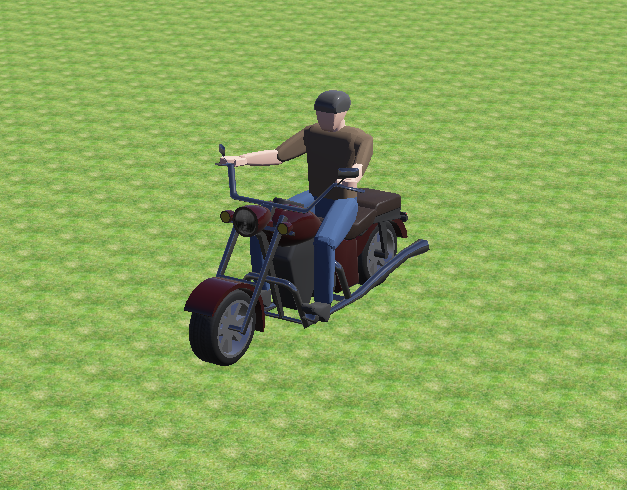
Motorbike
Pedestrian
行人对象会按照一定的路线和一定的速度行进，同时人体会模仿真人步态进行运动
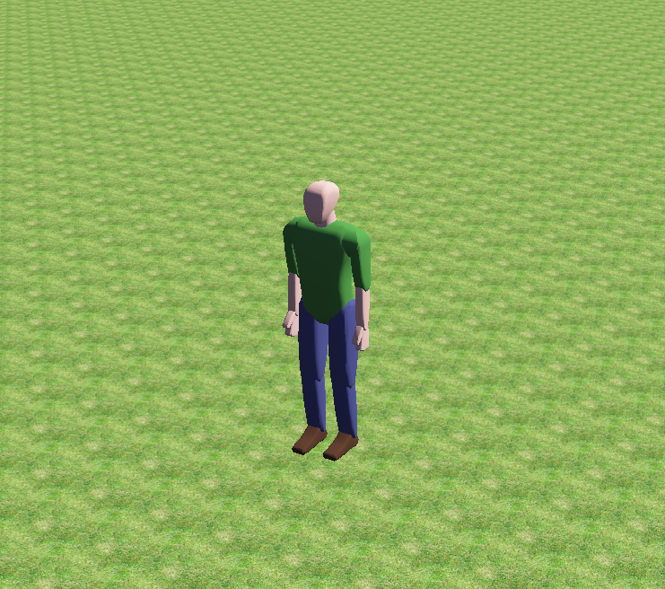

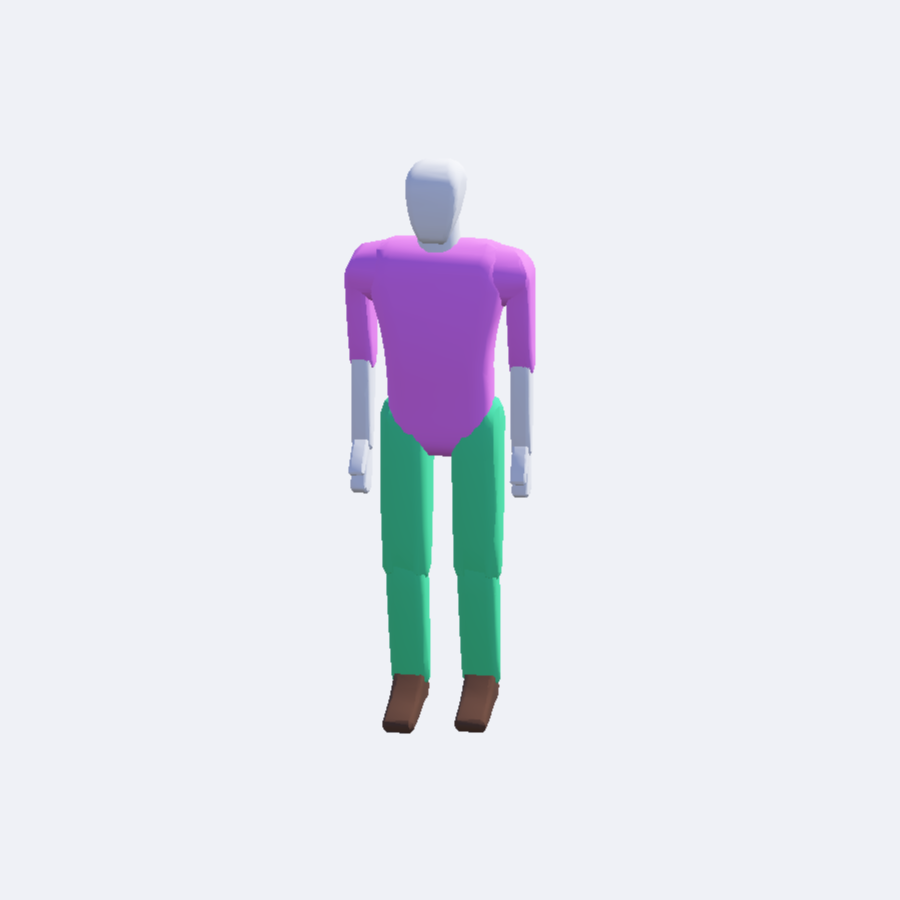
Pedestrian
Wheel Robots
轮式机器人

Shrimp 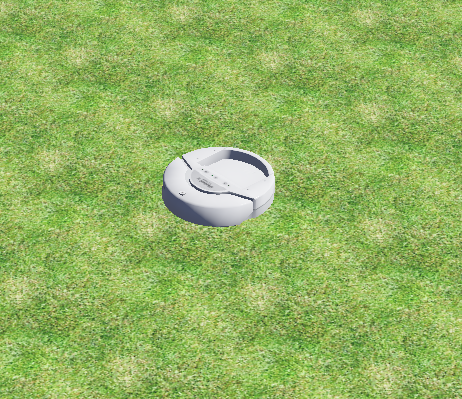
Create 
Sojourner月球车 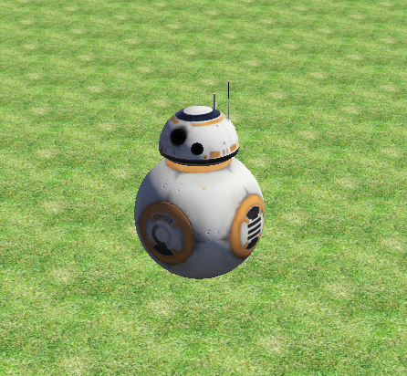
BB-8球形机器人 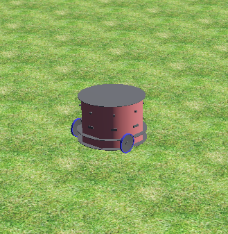
FireBird6
Legged Robots
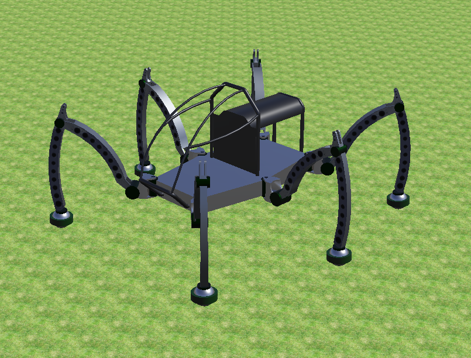
Mantis大型六足机器人 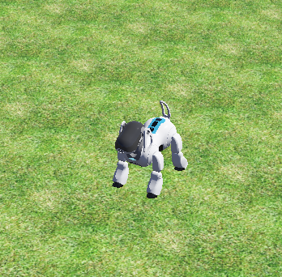
AiboErs7四足机器人 
BioloidDog四足机器人 
Scout双足机器人 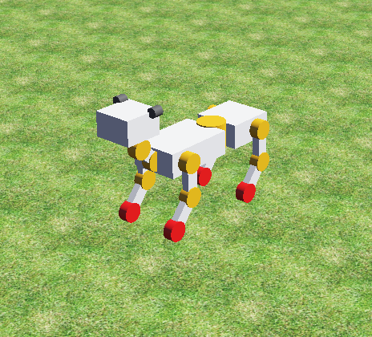
GhostDog四足机器人 
Hoap2双足机器人
自定义对象
该工程支持自定义被跟踪对象，实现步骤如下：
按照一定标准建立webots使用的描述文件proto文件，其中必须必须开放到场景树的属性包括”translation”，”rotation”，”name”。描述文件存放在
UAV_Follow_Env/Webots_Simulation/traffic_project/protos
场景树属性包
可以选择编写控制器，让被跟踪对象有自主的行为
在webots的
IMPORTABLE EXTERNPROTO模块中载入已经建立的proto文件

IMPORT PROTO
把proto的名称写进安全检查文件
UAV_Follow_Env/Webots_Simulation/traffic_project/config/safetyCheck.py
安全检查
在json配置文件中修改
Tracking_Object的描述，其描述应当与proto名称相同经过上述步骤就能够使用跟踪器跟踪自定义对象

内置Reward
本工程提供了离散型和连续型两种奖励函数，可用于设计不同的智能体评价指标。
奖励函数
由于Webots中超级智能体的存在，我们可以在每个时刻获取飞机以及被跟踪小车的坐标(x_f,y_f,z_f)以及(x_v,y_v,z_v)，并根据实际摄像头的Pitch角度以及设定的摄像头FOV可以直接判断出跟踪是否成功对于跟踪器（无人机），奖励函数有2种选择，第一种选择是稀疏奖励，当跟踪对象进入跟踪范围时给予奖励，离开范围时不给予奖励（奖励为0），数学表达式如下：
\[\begin{split}r_{d} = \begin{cases} 1 & t \in I, \\ 0 & \text{otherwise}. \end{cases}\end{split}\]其中 \(I\) 代表跟踪范围（相机镜头获取的画面范围）， \(t\) 代表跟踪对象在跟踪范围（相机镜头获取的画面范围）内的位置。
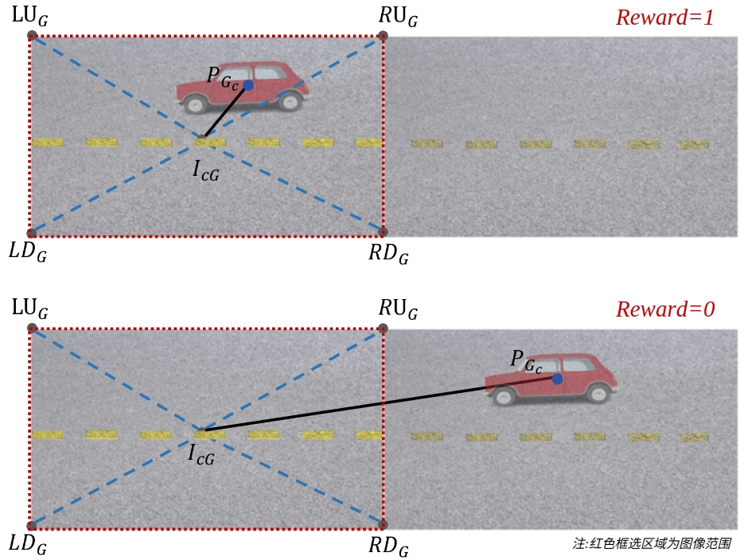
跟踪对象离散奖励示意图
第二种是密集奖励，通过判断跟踪对象相对跟踪范围中心的位置，给予一个随着距离增大而减小的奖励。奖励越高代表目标离范围中心点越近，反之越远。
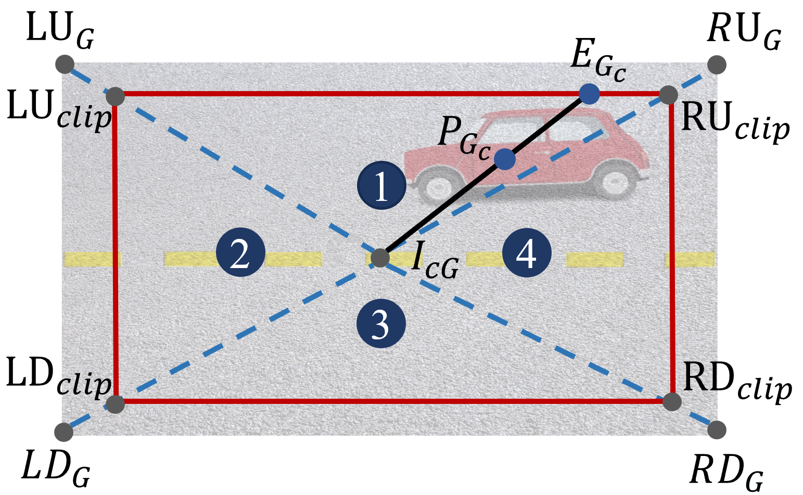
跟踪对象连续奖励示意图
上图是一个跟踪对象处于相机画面中的示意图，记点 \(E_{G_{c}}\) 到画面中心点 \(I_{cG}\) 的距离为 \(y_{EI}\)，跟踪对象点 \(P_{GC}\) 到中心点 \(I_{cG}\) 的距离为 \(y_{IP}\)，记他们的比例为
\[x = \frac{y_{IP}}{y_{EI}}\]那么，密集奖励可以使用下面的表达式获得：
\[\begin{split}r_{c} = \begin{cases} \tanh\left(\alpha(1-x)^{3}\right), & t \in I_{clip}, \\ 0 & \text{otherwise}. \end{cases}\end{split}\]目标离范围中心点越近时，奖励会越接近1，反之越接近0。 \(\alpha\) 为常数，建议取值3~5。 此外， \(I_{clip}\) 为有效reward判定范围(如上图 跟踪对象连续奖励示意图 中红色方框所示)，其边长 \(W_{I_clip}\) 与原图边长 \(W_{I}\) 的比值可以用 \(\lambda_{clip}\) 表示如下。
\[\lambda_{clip} = \frac{W_{I_clip}}{W_{I}}\]根据上述定义式， \(\lambda_{clip}\) 的合理范围为： \([0,1]\) ，在实际训练中，建议参数为 \(\lambda_{clip}=0.7\) 。
奖励判断
上述奖励函数的获取基于跟踪对象位置的判断。在实际中，跟踪对象在相机图像中的位置，可以通过机器视觉识别或者人工标注的方法提供。而在仿真训练中，为了简化计算，加速算法运行，我们直接使用了跟踪对象的坐标判断跟踪对象是否进入跟踪范围。

奖励获取示意图，A为相机画面映射到地面，B为小孔成像示意，C为相机坐标系建立
原理
首先需要获取仿真中的相机焦距，计算表达式如下：
\[f = \frac{W}{2\tan\left(\frac{1}{2}FoV\right)}\]其中 \(W\) 代表相机画面宽度（像素数）， \(FoV\) 指跟踪器相机视场角，如奖励获取示意图B所示。
然后，我们需要将相机画面角点投影到跟踪对象所处的空间平面上，如奖励获取示意图A，以便和跟踪对象的坐标对比。如奖励获取示意图C所示，在相机光心建立相机坐标系 \(\{c\}\)，从而可以获得相机画面4个角点在坐标系 \(\{c\}\) 下的坐标：
\[\begin{split}\text{LU}\left(-f,-\frac{1}{2}W,\frac{1}{2}H\right),\\ \text{LD}\left(-f,-\frac{1}{2}W,-\frac{1}{2}H\right),\\ \text{RU}\left(-f,\frac{1}{2}W,\frac{1}{2}H\right),\\ \text{RD}\left(-f,\frac{1}{2}W,-\frac{1}{2}H\right)\end{split}\]并易知光心 \(C\) 坐标为 \((0,0,0)\)。由此可知4个直线方程：
\[\begin{split}\begin{matrix} \text{LUC}: \frac{x}{-f} = \frac{2y}{-W} = \frac{2z}{H}, \\ \text{LDC}: \frac{x}{-f} = \frac{2y}{-W} = \frac{2z}{-H}, \\ \text{RUC}: \frac{x}{-f} = \frac{2y}{W} = \frac{2z}{H}, \\ \text{RDC}: \frac{x}{-f} = \frac{2y}{W} = \frac{2z}{-H} \end{matrix}\end{split}\]在地图中，跟踪对象所处地面均为平面，当地面水平时，可以通过地面高度知道地面的数学表达式为
\[G_{w}: z = h\]\(\{w\}\) 代表世界坐标系， \(h\) 为地面高度。
由于跟踪器云台姿态已知，易得到相机坐标系 \(\{c\}\) 到世界坐标系 \(\{w\}\) 的转换关系，也就是得到齐次变换矩阵 \(T_{ct}\)。
将平面方程 \(G_{w}\) 转换到坐标系 \(\{c\}\) 下，与4个直线方程联立，可求得四个地面交点 \(LU_{G}, LD_{G}, RU_{G}, RD_{G}\)，该4个点组成了跟踪范围 \(I\) 的4个角点，从而确定跟踪区域 \(I\)。
从仿真环境中读取跟踪对象的坐标点 \(p_{vG}\)，并转换到坐标系 \(\{c\}\) 下，得 \(p_{vc}\)，求得比例 \(x\)，即可确定跟踪对象是否被成功跟踪。
当地面非水平时计算方法类似。
投影可视化
按照上述原理实现之后效果如下视频，在仿真中将方块放置到地面与直线计算出来的交点处，就可以实时看到相机画面的范围：
注意：视场角上限不能超过地平线，否则计算结果没有意义。
如何转化为Reward
用于计算reward共有两个变量：
仿真环境中被跟踪目标在地面坐标系中的实际位置，由Supervisor获得，记为P1
仿真环境中跟踪器摄像头视平面的期望跟踪点，投影到地面坐标系的二维位置，记为P2
首要目标是实现跟踪器tracking，是否正确tracking是获得奖励的前提。若P1与P2满足最基本的tracking要求，即可获得奖励值1，否则，直接消除所有奖励，输出奖励0。使用阶跃函数实现：

阶跃函数示意图

次要目标是跟踪器tracking得更好。因此P1与P2之间的接近程度可以作为奖励的惩罚项。接近程度越低惩罚越大。惩罚项使用正切双曲线函数实现： \(tanh(x)=\frac{e^{x}-e^{-x}}{e^{x}+e^{-x}}\)

双曲正切函数示意图


定制化参数接口
输入动作
输入动作用于控制跟踪器的运动，目前跟踪器有四个动作，前进，后退，左移，右移，加上reset数据共5个浮点数
返回参数
返回参数主要包括三个部分，基础数据包，自定义奖励数据包，雷达数据包
基础数据包
基础数据包共22个浮点数，如下所示：
typedef struct _Odometry{ double t;// 仿真步数（不是仿真时间） vector3 position;//三轴位置m vector3 linear;//三轴线速度m/s vector3 acc;//三轴加速度m/s^2 vector3 angular;//三轴角速度rad vector4 orientation;//四元数 vector3 angle;//欧拉角 double reward;//reward double done;//是否结束仿真 }Odometry;
| 类别 | 传感器 | 参数 | 类型 | 描述 | 潜在任务 |
|---|---|---|---|---|---|
| Vision | Camera | Image | Mat | Images captured by the camera | Default sensor |
| Lidar | LidarCloud | vector2000 | Point cloud from RpLidarA2(m) | Obstacle avoidance | |
| Motion | GPS | Position | vector3 | Position (m) | Visual navigation |
| Linear | vector3 | Linear velocity (m/s) | Visual navigation | ||
| Accelerometer | Acc | vector3 | Acceleration (m/s^2) | Visual navigation | |
| Gyroscope | Angular | vector3 | Angular velocity (rad/s) | Robot posture stabilization | |
| IMU | Angle | vector3 | Eular angles (rad) | Robot posture stabilization | |
| Orientation | vector4 | Quaternion representation | Robot posture stabilization |
自定义奖励数据包
自定义奖励数据包共59个浮点数+1个字符串，包括以下部分
typedef struct _rewardData{ double cameraWidth;// 图像宽度（像素） double cameraHeight;// 图像高度（像素） double cameraFov;// 摄像头视场角（rad）[0,pi] double cameraF;// 摄像头焦距估算（像素） double cameraPitch;// 摄像头俯仰角 (rad) double trackerHeight;// 跟踪器高度 (m) double initDirection;// 初始跟踪角度 (rad) double T_ct[16];// 摄像头相对于世界坐标系的齐次变换矩阵 double T_tw[16];// 车辆相对于世界坐标系的齐次变换矩阵 vector3 cameraMidGlobalPos;// 摄像头中心映射到地面在世界坐标系下的三维坐标 vector3 carMidGlobalPos;// 车辆中心在世界坐标系下的三维坐标 vector3 cameraMidPos; // 摄像头中心世界坐标系的坐标 vector4 carDronePosOri; // 车辆中心在跟踪器坐标系下的1D姿态+3D坐标（第一个元素是姿态） vector3 carDroneVel; // 车辆中心在无人机坐标系下的3D速度 vector3 carDroneAcc; // 车辆中心在无人机坐标系下的3D加速度 double crash; // 跟踪器是否与建筑物碰撞 double carDir;// 车辆运行方向(0停止，1直行，2左转，3右转) std::string carTypename;// 对象类型 }rewardData;
其中，参数
carCameraPosOri中跟踪器坐标系定义和姿态角定义如下：
无人机坐标系定义


雷达数据包
雷达点云数据。该环境中的跟踪器搭载了RpLidarA2单线雷达，其点云数据将输出一个长度为2000的数组。